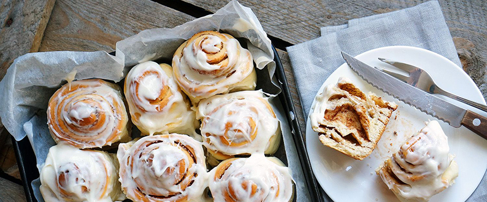

приготовление:
-
В небольшой кастрюле соединить 100 мл молока, 60 г сливочного масла, 60 г сахара и щепотку соли. Прогреть до растворения масла и сахара, затем слегка остудить.
-
В другой миске смешать 10 г сухих дрожжей, 100 мл тёплой воды и 1 ч. л. сахара. Оставить в тёплом месте на 10 минут, пока смесь не начнёт пузыриться и увеличиваться в объёме.
-
Влить дрожжевую смесь в молочно-масляную, добавить 2 яйца и перемешать венчиком. Постепенно всыпать 570 г муки и замесить тесто. Вымешивать 5–10 минут: тесто должно остаться мягким, но стать гладким и эластичным. Переложить в миску, накрыть полотенцем и оставить в тёплом месте на 30–40 минут, пока оно не увеличится вдвое.
-
Для начинки смешать 150 г коричневого сахара, 1 ст. л. какао-порошка и 1 ст. л. молотой корицы. Отдельно растопить 40 г сливочного масла. Раскатать тесто в прямоугольник толщиной ≈ 5 мм, смазать растопленным маслом и равномерно распределить сухую смесь. Свернуть пласт в плотный рулет и нарезать на булочки.
-
Выложить булочки в стеклянную форму, оставляя между ними 1–2 см. Разогреть духовку до 170 градусов, а булочки оставить на 15 минут для расстойки. Выпекать ≈ 20 минут до румяной корочки. Не передерживать, иначе булочки получатся сухими.
-
Для покрытия взбить миксером 200 г сливочного сыра, 2 ст. л. сливок или молока и 170 г сахарной пудры до однородности.
-
Достать готовые булочки из духовки и покрыть кремом. Дать немного остыть и подавать тёплыми. Хранить в холодильнике, а перед подачей разогревать.